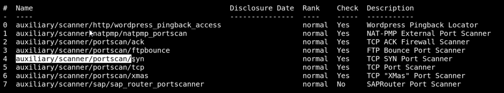

Masscan:- command :
- >> massscan -p1-65535 10.0.2.15
- used to see available ports while nmap is enumerating
-------------------------------------------------------------------------------------------------------------------------------------------------------------------------------
NMAP:- command: quick scan of all ports with no enumeration of them
- >> nmap -T4 -p- [ip]
- otherwise you know how to use it dumb fuck
-------------------------------------------------------------------------------------------------------------------------------------------------------------------------------
METASPLOIT: best usuage is running a port scan through a shell
>> search portscan

you also know how to use this from here
>> show options